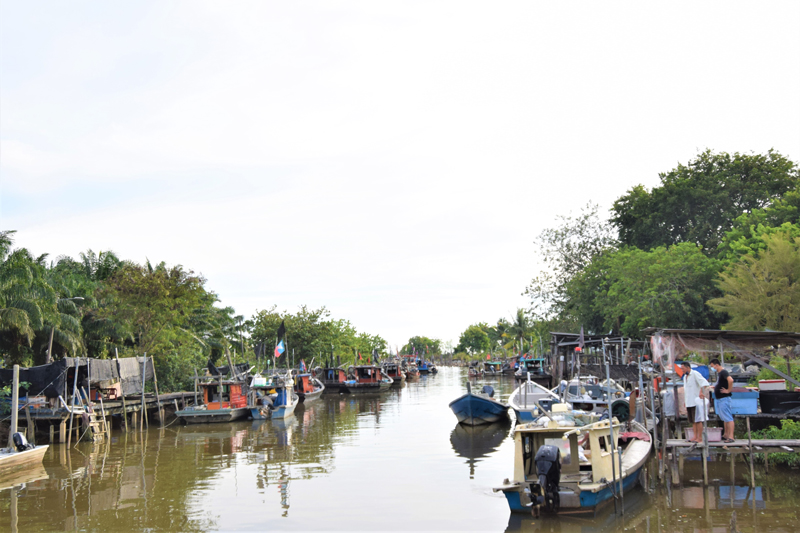

The fishing village of Tanjung Sepat is the heart of the local community, where traditional fishing remains an important source of livelihood and cultural identity.
Visitors can observe colourful fishing boats, watch fishermen preparing for their daily catch, and experience the peaceful rhythm of village life along the coast.
Beyond fishing, the village reflects the warmth and hospitality of the local community, offering visitors a glimpse into traditions that have been passed down through generations.
Discover the traditions and unique experiences that make Tanjung Sepat's fishing village a memorable destination.
Watch colourful fishing boats arriving with the day's fresh catch.
Experience seafood delivered directly from the ocean to local markets.
Meet friendly villagers and learn about their traditional way of life.
Discover generations of maritime history and fishing traditions.
Observe local fishermen returning with their fresh catch.
Capture traditional fishing scenes and beautiful coastal landscapes.
Purchase fresh seafood and local products.
Learn about the culture and hospitality of the fishing community.
Plan your visit to experience the authentic charm of Tanjung Sepat's traditional fishing village.
Tanjung Sepat Fishing Village, Kuala Langat, Selangor, Malaysia.
Early Morning
(6:00 AM – 10:00 AM)
Watch fishermen return with fresh catches.
Free Entry
Open to all visitors.
Respect the local community, avoid disturbing fishermen, and help keep the village clean.
The traditional fishing village is located near the coastline of Tanjung Sepat and is easily accessible by road.